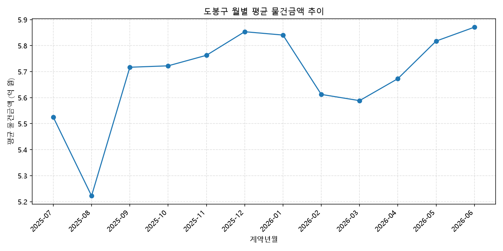

Data Analyst
임채원
데이터 기반 정량분석을 통해 정책과 사업의 방향을 설득력 있게 제시하는 일을 해왔습니다. 공공기관·지방자치단체 연구용역에서 설문 설계부터 통계분석, 보고서 작성까지 담당했고, Business Analytics 석사과정에서 회귀분석, 인과추론, 머신러닝 등 정량분석 역량을 더했습니다. 새로운 데이터와 기술을 빠르게 학습해 실무에 적용하는 것을 좋아합니다.
프로필
| 항목 | 설명 |
|---|---|
| 주요 경력 | 공공기관·지방자치단체 대상 학술연구용역 수행 (설문 설계, 실사, 통계분석, 보고서 작성) |
| 학력 | 고려대학교 일반대학원 경영학과(Business Analytics) 석사 |
| 관심 분야 | Python·R 기반 데이터 분석, 인과추론, 데이터 기반 정책·사업 성과분석 |
[서울 지역(구)별] 아파트 실거래 살펴보기
2025년 7월부터 2026년 6월까지 서울시 아파트 매매 실거래가(약 7만 2천 건)를 자치구 단위로 집계했습니다. 도봉구의 평균 물건금액은 약 5.7억 원으로, 서울 평균(약 11.9억 원)의 절반 수준이며 25개 자치구 중 25위(최하위)를 기록했습니다. 1위인 강남구(약 27.5억 원)와는 약 4.8배 차이가 나며, 상대적으로 저렴한 자치구인 노원구·금천구·중랑구보다도 낮은 수준입니다. 월별 추이를 보면 2025년 8월에 저점(약 5.2억 원)을 찍은 뒤 등락은 있었지만 2026년 6월 기준 5.87억 원까지 완만하게 상승하는 흐름을 보였습니다.
| 항목 | 결과 |
|---|---|
| 분석 대상 | 서울시 아파트 매매 실거래 (2025-07 ~ 2026-06, 72,459건) |
| 도봉구 평균 물건금액 | 약 5.7억 원 |
| 서울 전체 평균 물건금액 | 약 11.9억 원 |
| 도봉구 순위 | 25개 자치구 중 25위 (최하위) |
| 최고가 자치구 | 강남구 (약 27.5억 원) |
| 도봉구 월별 추이 | 2025-08 저점(약 5.2억 원) → 2026-06 약 5.87억 원으로 상승 |
